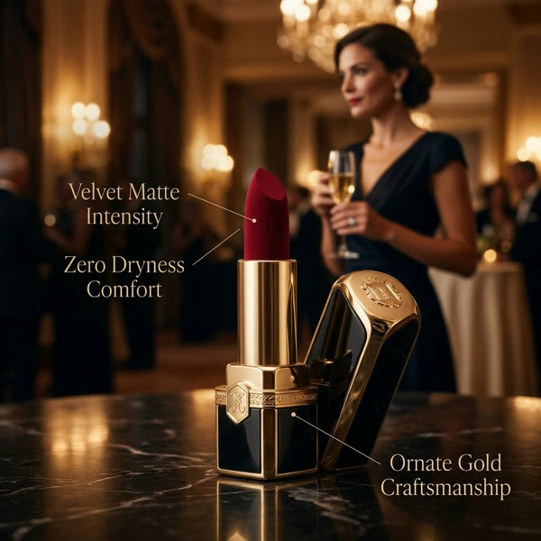
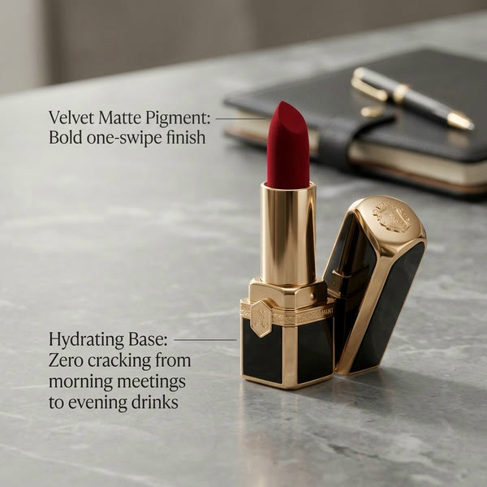

Plan chi tiết 10 phút: Một cây son, ba quảng cáo, ba việc
Bản này viết để dựng được: mỗi phần có mốc giây, hình từng nhịp, màn UI Promer THẬT (chụp sáng 04/11/2026 trên app.promer.ai, tài khoản firegroup), đường con trỏ và máy quay, lời Emma đầy đủ, chữ trên hình, âm thanh và thứ cần làm. Khung kể giữ như bản idea 03/11: xem cả chiến dịch trước, rồi lùi lại làm từng quảng cáo, mỗi quảng cáo kèm một chỗ hay hỏng.
Bản 2 (04/11): anh thấy hũ nến chán nên chọn sản phẩm có sẵn trong Promer: son đỏ vỏ vàng ("Luxury Velvet Matte Crimson Red Lipstick in Gold Case"). Tài khoản đã có 11 quảng cáo, 15 insight, 5 ý tưởng Ad Concept và một kịch bản Video Ad Clone 4 cảnh làm thật cho cây son này. Ảnh trong trang là ảnh Promer đã tạo, không phải ảnh tham khảo.
Tóm tắt
| Khổ, độ dài | 16:9 (1920×1080), dàn 10:00 để bản cuối không dưới 8:30 |
|---|---|
| Giọng | Emma (ElevenLabs), lời đọc tiếng Anh, số chữ và độ phủ ghi ở cuối trang (đếm bằng lệnh) |
| Sản phẩm demo | Son đỏ lì, vỏ đen ánh vàng, nắp có huy hiệu chữ. Đúng sản phẩm đang có trong mục Products của tài khoản |
| Ba tính năng | Ad Animation (dừng lướt) · UGC Ads (để người mua tin) · Video Ad Clone (thay bản quảng cáo đã cũ) |
| Cảnh UI | Dựng lại bằng HTML từ DOM thật đã chụp (file trong 03_YouTube/video-dai/L01/ui-that/), ảnh sản phẩm trong UI là cây son, xuất lớp 2x, máy quay + con trỏ trong AE. Không quay màn hình |
| Màu, chữ | Inter, mực #0B0B12, nền sáng, gradient Promer chỉ ở điểm nhấn; đỏ son và vàng chỉ nằm trong ảnh sản phẩm |





Câu hút: 10 giây đầu
"WHICH ONE WAS FILMED?"
Ba quảng cáo son chạy cạnh nhau. Người xem bị kéo vào trò đoán; giây 5 lật đáp án "không cái nào được quay"; giây 8 hứa ngay giá trị của cả video. Son là sản phẩm quảng cáo quen thuộc nhất trên feed, nên câu "cái nào được quay" rất dễ đoán sai. Lời hứa không dùng lại "1 ảnh ra 3 quảng cáo" (S03 và C01 đã dùng).
| Giây | Hình | Lời Emma | Chữ to | Âm thanh |
|---|---|---|---|---|
| 0,0–0,8 | Khung 0 đen. Ba khung dọc 9:16 bật ra cùng lúc trên nền sáng: (1) Ad Animation: nắp vàng mở, thỏi son đỏ xoay trồi lên trên nền mây; (2) UGC: cô gái tô son trước gương rồi nói vào máy; (3) Clone: macro thỏi son trên bột màu và vảy vàng, lia máy nhanh | WHICH ONE WAS FILMED? đập vào nửa trên (phóng 260% về 100%, rung nhẹ) | Một cú đập trầm đúng khung 0 | |
| 0,8–3,0 | Ba khung chạy. Dấu "?" nhảy lần lượt trên từng khung theo nhịp nhạc | "Only one of these used a camera." | (giữ tít) | Nhạc nhịp chậm, 3 tiếng tick theo dấu "?" |
| 3,0–5,0 | Con trỏ lượn qua cả ba khung như đang chọn | "Pick one." | Nhạc dồn lên | |
| 5,0–8,0 | Ba khung đứng hình, một gạch chéo đỏ quét qua cả ba cùng lúc | "None did." | NONE. (cùng cỡ tít, thay chỗ) | Nhạc tắt đột ngột + một tiếng "whoosh" ngược |
| 8,0–10,0 | Ba khung tách ra, dưới mỗi khung bật nhãn: STOP THE SCROLL · BUILD TRUST · REPLACE A TIRED AD | "Three ads, three jobs, and where each one breaks." | 3 nhãn | Nhạc nền chính vào |
Điều kiện để hook này chạy: ba quảng cáo phải trông như quay thật. Nếu nhìn ra AI ngay thì trò đoán phản tác dụng. Vì vậy ba clip này phải xong và anh duyệt TRƯỚC khi dựng phần còn lại.
Hook dự phòng: mở bằng lỗi "huy hiệu chảy". Cận nắp vàng trong một video AI, huy hiệu chữ trên nắp chảy ra khi máy xoay, khoanh đỏ, đứng hình. Emma: "This is why most AI ads look fake." Tít: THE LOGO MELTED.


Đã xem trên app thật (04/11/2026) và chỗ còn thiếu
| Màn | Trạng thái | Thấy gì |
|---|---|---|
| Ad Animation, màn đầu | Đã chụp | Model mặc định Seedance 2.0 Fast · "Upload image" / "Select static creative" · nhắc "Use clear product image", "Avoid text-heavy visuals" · khung xanh "Seedance may not generate videos that contain real people. Use a product-only image instead." · thanh dưới "9:16 · 10s · 720 HD · loa" + "Generate video" |
| Ad Animation, danh sách model | Đã chụp | 8 model: Seedance 2.5 · Seedance 2.0 · Seedance 2.0 Fast · Veo 3.1 · Kling 4.0 · Kling 3.0 · MiniMax H3 · MiniMax H3 Turbo, mỗi cái có một dòng mô tả và độ dài tối đa |
| Ad Animation, chọn creative có sẵn | Đã chụp | Hộp "Select your static creative", lưới thư mục theo ngày, nhãn Ad Clone / Ad Prompt / Ad Concept. Các ảnh son ngày 22/10 nằm trong đó |
| Ad Animation, bước 2 chọn kịch bản chuyển động (Brief, Effect) | Chưa xem | Chỉ hiện sau khi chọn ảnh; em chưa chắc việc chọn ảnh có tự tạo kịch bản và trừ credit không |
| UGC Ads, màn đầu | Đã chụp | Tít "Turn product into winning ads with UGC Ads" · ô Product image 4 chỗ · "How do you want to start?" với "Get UGC ideas" (Recommended) / "Select UGC format" / "Add my idea" · thanh dưới "Video language: English · 9:16 · 15s · Select avatar · Select voice · Generate script" |
| UGC Ads, chọn mẫu | Đã chụp | 6 mẫu: Direct Testimonial · Voiceover Product Review · POV Product Demo · Problem and Solution · Routine or Day in the Life · Unboxing / First Impression |
| UGC Ads, ý tưởng AI gợi ý, kịch bản, avatar, video ra | Chưa xem | "Select avatar" bị khoá cho tới khi có ý tưởng; "Get UGC ideas" và "Generate script" có thể tốn credit nên em không bấm |
| Video Ad Clone, màn đầu | Đã chụp | Product image · "Reference video ad": "Select video" / "Upload video" / "Paste video URL" · gợi ý "Select a product to see relevant ads to clone" |
| Video Ad Clone, thư viện quảng cáo mẫu | Đã chụp | Ba tab "Video ads · Ad spy · My library" · dòng "[số] ads suggested for [sản phẩm]" (lúc chụp đang chọn nhẫn: 151 quảng cáo; với son phải xem lại) · mỗi quảng cáo có số giây, biểu tượng nguồn, nút "Select" khi rê chuột |
| Video Ad Clone, kịch bản tách cảnh CỦA CÂY SON | Đã có thật | "Product Demo Visual Only Hook: Luxury Crimson Lipstick" · "4 scenes · 19s · 1080 HD · 9:16 · English" · Scene 1 Hook 0:00→0:04 (macro từ trên xuống, son trên bột màu và vảy vàng, lia máy nhanh) · Scene 2 Feature 0:04→0:08 (dao trộn màu cắt vào thỏi son) · Scene 3 Solution 0:08→0:12 (nắp nhấc lên, thỏi son xoay trồi lên, máy ngửa lên) · Scene 4 Feature 0:12→0:19 (macro dựng nhanh huy hiệu và vỏ vàng) · cảnh 1 và 3 "Missing image", cảnh 2 và 4 "Ready to generate" · "Generate full video (4 clips)" 418 credit |
| Credit tài khoản | Đã đọc | 44 credit (không đổi sau khi xem) |


Dàn 13 phần
Xem bảng "Câu hút: 10 giây đầu" ở trên.
| Hình | Ba quảng cáo chạy lần lượt, toàn màn, mỗi cái có nhãn nhỏ góc trên: "AD 1 · STOP THE SCROLL" (10 giây, Ad Animation), "AD 2 · BUILD TRUST" (15 giây, UGC), "AD 3 · REPLACE A TIRED AD" (10 giây cắt từ bản clone 19 giây). Giây 0:42 thu lại thành 3 khung nhỏ xếp hàng |
| Lời Emma | "This is a full lipstick campaign. A product film to stop the scroll. A creator ad to build trust. And a fresh version of an ad that already worked. No studio, no model to book, no editor. By the end of this video, you'll make all three, and you'll know the one mistake that ruins each type. I'll show you every click, every setting, and every place it went wrong on the way." Đây là cả chiến dịch. Xem xong, bạn tự làm được cả ba và biết lỗi làm hỏng từng loại. |
| Chữ trên hình | Nhãn AD 1 / AD 2 / AD 3. Không thêm chữ khác để người xem nhìn quảng cáo |
| Âm thanh | Nhạc nền hạ thấp; tiếng của từng quảng cáo bật nhỏ dưới lời Emma (tiếng nắp son bật, tiếng creator) |
| Cần có | 3 quảng cáo hoàn chỉnh (cũng là 3 khung của câu hút) |
| Hình | Ba thẻ trắng viền mảnh trên nền sáng: STOP THE SCROLL · BUILD TRUST · REPLACE A TIRED AD. Một phễu mua hàng mờ phía sau (Lướt → Cân nhắc → Mua lại). Ở câu cuối, dưới mỗi thẻ hiện tên tính năng kèm biểu tượng đúng như thanh bên Promer |
| Lời Emma | "Most stores run one ad until it dies. But one ad can't do every job. Someone scrolling needs a reason to stop. Someone comparing needs a reason to trust you. And when your best ad gets tired, you need a replacement that keeps what worked. So we'll build one ad for each job, with three tools inside Promer: Ad Animation, UGC Ads, and Video Ad Clone. Each one has a different job, a different input, and a different way to fail. Let's start with the one thing all three need." |
| Chữ trên hình | Tên 3 việc + 3 tên tính năng (chép đúng chữ trên app: "Ad Animation", "UGC Ads", "Video Ad Clone") |
| Âm thanh | Mỗi thẻ bật một tiếng "pop" nhẹ |
| Cần có | Thẻ HTML; biểu tượng lấy từ thanh bên trong DOM đã chụp |
| Hình | (1) Bốn ảnh cùng cây son bật ra lần lượt, mỗi ảnh một lỗi, gạch đỏ: vỏ vàng loá đèn (lỗi hay gặp nhất của bao bì kim loại) · chụp nghiêng · mất nắp ngoài khung · nền bàn trang điểm bừa bộn. (2) Dưới mỗi ảnh hỏng chạy 1 giây video lỗi tương ứng (huy hiệu chảy, thỏi son đổi dáng). (3) Ảnh đúng trượt vào giữa: ảnh sản phẩm thật trong Promer (nền trắng, nắp mở đặt cạnh, huy hiệu rõ), tick xanh. (4) Cắt sang UI Ad Animation thật, máy quay đẩy vào dòng "Use clear product image" và "Avoid text-heavy visuals" |
| UI thật | Ad Animation, khung nhắc dưới ô tải ảnh (ảnh anim_dash) |
| Lời Emma | "Everything starts with one product photo, and this is where most AI ads fail before they begin. Here are four photos of the same lipstick. Glare on the gold case. A tilted angle. The cap cut off. A messy vanity in the background. None of them look terrible to you. But the AI reads every pixel. Each one makes it guess, and every guess shows up in the video: a melted logo, a bullet that changes shape. Now this one. Straight on, cap beside it, logo readable, plain background. Promer even says it right on the screen: use a clear product image, avoid text-heavy visuals. Shiny packaging needs soft light: shoot near a window, never under a bare bulb. If you fix one thing today, fix the photo." |
| Chữ trên hình | GLARE · TILTED · CROPPED · MESSY (dưới 4 ảnh hỏng) · CLEAN (ảnh đúng) |
| Âm thanh | Tiếng "buzz" sai cho mỗi gạch đỏ, tiếng "ding" cho ảnh đúng |
| Cần có | Ảnh đúng: lấy ảnh sản phẩm có sẵn trong Promer (cần bản gốc độ phân giải cao). 4 ảnh hỏng và 2 đoạn video lỗi ngắn: làm mới |

| Hình theo nhịp |
2:15 Thẻ chương "AD 1 · STOP THE SCROLL", rồi vào UI. 2:20 Thanh bên: con trỏ bấm "Video ads", nhóm mở ra, bấm "Ad Animation". Máy quay theo con trỏ. 2:28 Bấm ô model "Seedance 2.0 Fast", danh sách 8 model mở ra. Máy quay đẩy vào 2 dòng: "Seedance 2.0 Fast · Cinematic motion, shorter wait" và "Seedance 2.5 · Smooth camera moves, clean product detail". Con trỏ chọn Seedance 2.5. 2:45 Bấm "Select static creative". Hộp "Select your static creative" mở, con trỏ đi qua các thư mục son ngày 22/10. Rê lên ảnh gala (có người phụ nữ phía sau), dừng. 2:55 Máy quay lia sang khung xanh "Seedance may not generate videos that contain real people. Use a product-only image instead." Con trỏ quay lại hộp, chọn ảnh son trên nền mây (chỉ có sản phẩm). 3:08 Bước 2: danh sách kịch bản chuyển động, mỗi thẻ có Brief và Effect. Con trỏ chọn một thẻ, rồi gõ thêm vào ý riêng: "Keep the logo facing camera. End on a clean frame." (màn này chưa xem, xem mục "Cần anh quyết") 3:28 Thanh dưới: "9:16 · 10s · 720 HD · loa". Bấm "Generate video". 3:33 Màn chờ ngắn (tua nhanh), rồi video bật ra toàn màn: nắp vàng nhấc lên, thỏi son đỏ xoay trồi lên giữa mây |
| UI thật | anim_dash, anim_model, anim_chon_creative (+ màn bước 2 cần chụp thêm) |
| Lời Emma | "Ad one: stop the scroll. Open Video ads, then Ad Animation. First, pick a model. Seedance 2.0 Fast is the default, and the quickest. For product detail, Seedance 2.5 is built for smooth camera moves and clean product detail. Veo 3.1 is made for people and scenes, and Kling 4.0 adds native audio. For a product with a logo, I stay with Seedance. Next, add your image. Upload it, or reuse a static ad you already made. I made this gala ad last week, and I love it. But look: there's a woman in it, and Seedance may not generate videos with real people. So I pick the product-only version instead. Then choose an animation script. Each one has a brief, what happens, and an effect, how it moves. Read the brief like a note to a director. If the camera circles the product, skip it. I'll show you why in a second. Pick one, or write your own. Here's what I add every time: keep the logo facing camera, and end on a clean frame. Nine by sixteen, ten seconds, HD, sound on. Generate. And here's what came back." |
| Chữ trên hình | Chú thích nhỏ cạnh con trỏ ở 3 chỗ: "MODEL", "PRODUCT-ONLY IMAGE", "KEEP + END". Không thêm tít lớn |
| Âm thanh | Tiếng bấm chuột nhẹ mỗi lần chọn, tiếng gõ phím khi nhập ý, một tiếng "whoosh" khi video ra |
| Cần có | Lớp HTML 2x của 3 màn đã chụp · màn bước 2 · video kết quả 10 giây |


| Hình | (1) Hai video cạnh nhau: bên trái máy xoay quanh cây son, huy hiệu trên nắp vàng chảy ra, thỏi son đổi dáng (khoanh đỏ, đứng hình); bên phải máy đẩy thẳng vào, huy hiệu đứng yên (tick xanh). (2) Ba video cùng một ý, dừng ở khung cuối, xếp hàng; hai khung có tay, mây che sản phẩm (gạch), một khung sạch: cây son giữa khung, huy hiệu quay vào máy, chừa chỗ trống phía trên. Chữ ưu đãi và logo trượt vào chỗ trống đó. (3) Thẻ nhỏ góc dưới: "AD 1 · DONE · [số phút đo thật]" |
| Lời Emma | "Here's the first thing that breaks. Watch the logo when the camera circles the lipstick. It melts, because the AI has to invent the back of a case it has never seen. Same image, same idea, but a straight push-in, and the logo stays sharp. Rule one: move the camera toward the product, not around it. And when you get a few versions, don't judge the middle. Pause on the last frame. That's where your offer and your logo go. The first second earns the view. The last frame earns the click. So pick the one with the cleanest ending, not the flashiest middle." |
| Chữ trên hình | AROUND (đỏ) · TOWARD (xanh) · "LAST FRAME" cạnh hàng 3 khung cuối |
| Cần có | 1 video lỗi "máy xoay quanh" + 1 video "máy đẩy vào" (cùng ảnh) · 3 bản cùng ý để so khung cuối |
| Hình theo nhịp |
4:35 Thẻ chương "AD 2 · BUILD TRUST". 4:40 Thanh bên "UGC Ads". Tít "Turn product into winning ads with UGC Ads" hiện ra, máy quay lướt từ trái sang phải. 4:48 Ô "Product image": ảnh cây son vào ô 1, rồi thêm 2 góc khác (nắp đóng, cận huy hiệu) vào ô 2 và 3. Dòng dưới đổi "3 product images selected". 5:00 "How do you want to start?": máy quay đẩy vào thẻ "Get UGC ideas" có nhãn "Recommended", đọc dòng "Let AI suggest angles, hooks and UGC formats from your product." 5:10 Con trỏ sang "Select UGC format", hộp 6 mẫu mở ra. Từng mẫu sáng lên lần lượt theo lời đọc. Con trỏ chọn "Routine or Day in the Life". 5:35 Thanh dưới: "Video language: English · 9:16 · 15s", bấm "Select avatar" (lưới avatar), chọn một cô gái cuối 20 tuổi; "Select voice"; "Generate script". 5:50 Kịch bản hiện ra, 4 nhịp được tô màu: Hook · Problem · Product · Reason to buy now (màn kịch bản và avatar chưa xem). 6:00 Video UGC 15 giây chạy toàn màn: cô gái chuẩn bị đi tiệc tối, tô son trước gương, quay lại nói vào máy |
| UI thật | ugc_dash, ugc_format (+ màn ý tưởng AI, avatar, voice, kịch bản cần chụp thêm) |
| Lời Emma | "Ad two: build trust. People trust people, so this one needs a creator. Go to UGC Ads and add your product image. You can add up to four angles, and more angles help the AI keep the product right. Now, how do you want to start? Not sure what to say? Click Get UGC ideas, and Promer suggests angles, hooks and formats from your product. Already know the style? Click Select UGC format. There are six: Direct Testimonial, Voiceover Product Review, POV Product Demo, Problem and Solution, Routine or Day in the Life, and Unboxing. For a lipstick, Routine works. Nobody buys a red lipstick for the bullet. They buy it for the night out. So show that moment: a creator getting ready, one swipe, out the door. Pick your language, nine by sixteen, fifteen seconds. Choose an avatar who looks like your buyer. For this one: a woman in her late twenties, getting ready at home. Pick a voice, and generate the script. Read it before you make the video. A good UGC script has four beats: a hook, a problem, the product, and a reason to buy now. If a line sounds like an ad, rewrite it the way a friend would say it." |
| Chữ trên hình | Tên 6 mẫu (chép đúng chữ app) · 4 nhãn nhịp kịch bản: HOOK · PROBLEM · PRODUCT · BUY NOW |
| Âm thanh | Tiếng bấm, tiếng "pop" khi từng mẫu sáng lên; khi video UGC chạy thì hạ nhạc nền, để tiếng creator |
| Cần có | 3 ảnh cây son 3 góc · màn avatar, voice, kịch bản · video UGC 15 giây |


| Hình | Video UGC đứng ở khung cô gái vừa tô son xong. Ba ô kiểm bật lần lượt, mỗi ô khoanh đúng chỗ trên hình: HANDS (ngón tay cầm son) · LIPS (viền son có lem ra ngoài, răng có dính màu) · CLAIMS (bong bóng lời nói "8-hour wear"). Góc dưới khung có dòng nhỏ "AI-generated creator" |
| Lời Emma | "Before you post any AI creator video, check three things. Hands: count the fingers on the lipstick. Freeze the frame where she picks it up, that's where mistakes show. Lips: is the color inside the lip line, and off her teeth? Claims: does she say anything you can't prove? Promer's own concept for this lipstick said eight-hour wear. That line stays only if it's true. And label it as AI-generated. It's the honest move." |
| Chữ trên hình | HANDS · LIPS · CLAIMS · dòng "AI-generated creator" |
| Cần có | Một khung cận từ video UGC; nếu video ra lỗi thật (tay, viền môi) thì dùng chính lỗi đó · ảnh Ad Concept có chữ "8-Hour" để chèn |
| Hình theo nhịp |
6:55 Thẻ chương "AD 3 · REPLACE A TIRED AD". Một quảng cáo son cũ chạy chậm dần, bạc màu như phim cũ. 7:03 Thanh bên "Video Ad Clone". Tít "Turn product into winning ads with Video Ad Clone", dòng phụ "Apply winning structures to create high-performing video ads." 7:10 Product image: cây son. Bên phải "Reference video ad", con trỏ bấm "Select video". 7:15 Hộp thư viện mở: ba tab "Video ads · Ad spy · My library", dòng "[số] ads suggested for Luxury Velvet Matte Crimson Red Lipstick…". Máy quay lướt dọc lưới quảng cáo, số giây ở góc mỗi khung. Rê chuột lên một quảng cáo son đã chạy lâu, nút "Select" hiện ra, bấm. 7:30 Thoáng qua "Upload video" và "Paste video URL" (lời đọc nhắc). 7:38 Kịch bản thật hiện ra: "Product Demo Visual Only Hook: Luxury Crimson Lipstick", hàng nhãn "4 scenes · 19s · 1080 HD · 9:16 · English", bốn thẻ "Scene 1: Hook 0:00→0:04", "Scene 2: Feature", "Scene 3: Solution", "Scene 4: Feature". Máy quay đi từng thẻ, đẩy vào "Visual description" và "Audio description". 7:55 Scene 1 và Scene 3 có nhãn vàng "Missing image": con trỏ thêm ảnh cây son, nhãn đổi sang xanh "Ready to generate". 8:05 Thanh dưới: bật "Background music", bấm "Generate scene by scene". 8:12 Video clone chạy toàn màn, cạnh quảng cáo gốc thu nhỏ để so nhịp |
| UI thật | clone_dash, clone_thu_vien, clone_full (kịch bản 4 cảnh này là của chính cây son, làm thật ngày 22/10) |
| Lời Emma | "Ad three: replace a tired ad. Every ad wears out. Instead of starting from a blank page, start from an ad that's already working. An ad that has run for months has already been tested with real money, and you get its structure for free. Open Video Ad Clone and add your product. Then pick a reference video ad. Click Select video, and Promer shows ads that match your product. You can also look in Ad spy or your own library, upload a video, or paste a link. Pick one that's been running for a while, and check the length on each card: choose one close to the length you want. Promer breaks it into a script, scene by scene. Here, four scenes, nineteen seconds. Each scene has a job, like Hook, Feature or Solution, a time, a visual description and an audio description. Read every description. If it shows something your product doesn't have, change it before you generate. If a scene says missing image, add a product shot. When every scene is ready, generate scene by scene to check each one, or the full video at once. Add background music if you want it." |
| Chữ trên hình | Chú thích "HOOK · FEATURE · SOLUTION" trên 4 thẻ cảnh · "MISSING IMAGE → READY" |
| Âm thanh | Tiếng cuộn phim khi quảng cáo cũ bạc màu, tiếng bấm, tiếng "tick" khi nhãn đổi xanh |
| Cần có | Quảng cáo gốc (đã có, nút "Reference ad" trong kịch bản; chỉ hiện mờ, không lộ thương hiệu người khác) · 2 ảnh cho cảnh thiếu · video clone 19 giây |

| Hình | Màn chia đôi. Trái "KEEP": thứ tự cảnh, nhịp, độ dài (4 khung cảnh giống nhau về bố cục giữa quảng cáo gốc và bản clone). Phải "NEVER COPY": logo, người, câu chữ, lời hứa, mỗi mục bị gạch đỏ |
| Lời Emma | "Here's where cloning goes wrong. Keep the structure: the order of scenes, the pacing, the length. Never copy the brand: their logo, their people, their words, their promises. You're borrowing the shape of a winning ad, not the ad. One test: if their customer saw your version, would they think it's the same brand? If yes, change it." |
| Chữ trên hình | KEEP · NEVER COPY + 7 mục |

| Hình | (1) Ba màn hình: điện thoại lướt Reels (quảng cáo 1), trang sản phẩm son có nút mua (quảng cáo 2 đặt cạnh nút), bảng chiến dịch (quảng cáo 3 thay chỗ bản cũ có nhãn "fatigued"). (2) Phiếu 5 dòng, tick dần theo lời đọc |
| Lời Emma | "Now put each ad where it works. The product film goes to Reels and Shorts, where people scroll fast. The creator ad goes on your product page, right next to the buy button. The cloned ad replaces the tired one in your campaign, so you can test the new version against the old winner. Before anything goes live, run this five-point check: clean photo, readable logo, clean last frame, claims you can prove, and an AI label." |
| Chữ trên hình | REELS · PRODUCT PAGE · CAMPAIGN · phiếu: CLEAN PHOTO / READABLE LOGO / CLEAN LAST FRAME / REAL CLAIMS / AI LABEL |
| Cần có | Trang sản phẩm son dựng bằng HTML (theo luật cảnh website thật); khung Reels; bảng chiến dịch vẽ đơn giản (không giả giao diện Meta) |

| Hình | Ba quảng cáo chạy lại liền mạch, lần này có ảnh sản phẩm gốc nhỏ ở góc để thấy tất cả bắt đầu từ cùng một cây son |
| Lời Emma | "So here's the campaign again. Same lipstick. Three ads, three jobs. Fix the photo. End on a clean frame. Check the hands and the claims. And copy the shape, never the brand." |
| Âm thanh | Nhạc nền lên to, chỗ không có giọng thì nhạc dẫn |
| Hình | Ba khung nhỏ + câu hỏi lớn, logo Promer chính thức, màn kết YouTube (2 ô video gợi ý) |
| Lời Emma | "Which one would you run first: the film, the creator, or the clone? Tell me in the comments." |
| Chữ trên hình | WHICH ONE WOULD YOU RUN FIRST? |
Danh sách cần làm trước khi dựng
| # | Thứ cần có | Số lượng | Làm bằng |
|---|---|---|---|
| 1 | Ảnh sản phẩm son bản gốc + 2 góc phụ (nắp đóng, cận huy hiệu) | 3 ảnh | Bản gốc tải từ Promer; 2 góc phụ làm mới |
| 2 | Ảnh son hỏng (vỏ loá, nghiêng, mất nắp, nền bừa) | 4 ảnh | GodTools (ảnh) hoặc sửa từ ảnh 1 |
| 3 | Quảng cáo 1 (Ad Animation) + bản "máy xoay quanh" lỗi + 2 bản cùng ý để so khung cuối | 4 clip 10 giây | Xem "Cần anh quyết" mục 1 |
| 4 | Quảng cáo 2 (UGC, mẫu Routine) | 1 clip 15 giây | Xem mục 1 |
| 5 | Quảng cáo 3 (Clone): kịch bản đã có, còn thiếu 2 ảnh cảnh và bước tạo video | 1 clip 19 giây | Xem mục 1 |
| 6 | Lớp UI HTML 2x, ảnh sản phẩm là cây son | khoảng 14 màn | DOM đã chụp 04/11 + các màn còn thiếu |
| 7 | Thẻ chữ, phiếu kiểm, màn chia đôi, trang sản phẩm | khoảng 10 màn | HTML |
| 8 | Lời Emma 13 đoạn | xem số đếm bên dưới | ElevenLabs, giọng Emma |
| 9 | Nhạc nền + SFX | 1 bài + bộ SFX | Chọn bằng đo BPM, cú đập rơi đúng giây 0 và giây 5 |
Lời Emma: 1.266 chữ (đếm bằng lệnh 04/11). Emma đọc 2,6 đến 3,4 chữ/giây nên giọng dài 6:12 đến 8:07, phủ 62% đến 81% của 10 phút. Chỗ trống còn lại là lúc quảng cáo chạy toàn màn và lúc con trỏ thao tác UI. Đo lại khi có file giọng thật.
Cần anh quyết
- Nguồn của 3 quảng cáo kết quả. Video này dạy dùng Promer, kết quả nằm ngay sau từng bước UI nên người xem sẽ hiểu đó là đầu ra của Promer.
(a) Tạo thật trong Promer: đúng với lời đọc, câu "None did" là thật. Tài khoản đang có 44 credit; riêng nút "Generate full video (4 clips)" của Video Ad Clone ghi 418 credit, nên phải nạp thêm. Giá của Ad Animation và UGC chỉ hiện sau khi chọn ảnh, em chưa đọc được.
(b) Làm bằng GodTools (đúng luật 01/11): lời đọc phải đổi, không được nói hay ngụ ý Promer tạo ra các clip này, và màn kết quả sau UI sẽ phải bỏ.
Em đề xuất (a). - Cho em xem các màn còn thiếu: Ad Animation bước 2 (kịch bản Brief/Effect), UGC ý tưởng AI, avatar, voice, kịch bản. Các màn này có thể tốn credit khi mở. Anh tự bấm rồi gửi ảnh, hoặc cho phép em bấm.
- Trùng với L06. Video dài L06 "Lipstick Ad Ideas · góc Black Friday" cũng dùng son. Nếu L01 dùng cây son này thì L06 nên đổi sản phẩm, hoặc dùng cây son khác hẳn kiểu dáng.
- Câu hút: giữ "WHICH ONE WAS FILMED?" hay dùng bản dự phòng "THE LOGO MELTED".
- Tiêu đề video: anh chọn (tiêu đề không dùng khuôn "How to Turn X Photo Into…").